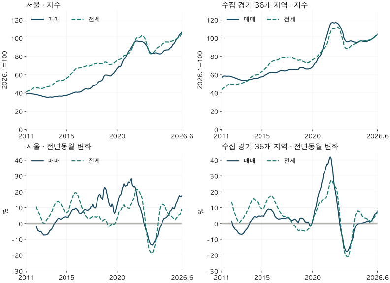

가격의 긴 흐름 · 매매와 전세
매매와 전세는 같이 움직일까? 서울·경기 15년 지수 비교
서울·수집 경기의 같은 주택을 2011~2026년 매매·전세 모형가격으로 비교했습니다. 두 지수가 엇갈린 구간과 전세가율의 차이, 제한된 표본의 한계를 확인하세요.
분석 기간 · 2011.1~2026.6 · 같은 주택 · 2026.1=100 | 자료 기준일 · 2026-10-04
매매가 주춤한데 전세는 오른다는 말을 들으면 두 시장이 늘 같은 방향으로 움직이는지 궁금해집니다. 서울과 수집 경기의 같은 주택을 2011년부터 2026년 6월까지 고정하고, 두 모형가격을 같은 산식으로 비교했습니다. 기준월만 맞추는 데서 한 걸음 더 나아가, 비교하는 집도 맞췄습니다.
두 시장은 함께 오르내리기도 했지만, 반대 방향으로 움직인 구간도 있습니다. 서울의 2012년 1~9월에는 전년동월 대비 매매가 하락하고 전세는 상승했습니다. 2019년 2~7월에는 매매 상승·전세 하락으로 방향이 바뀌었습니다. 이는 현재 재고 중 서울 30~40%, 수집 경기 20~30% 구간의 오래된 공통 주택을 비교한 결과입니다. 전체 시장을 대표하거나 앞으로의 순서를 예측하는 지수로 읽으면 안 됩니다.
1. 두 지수를 같은 기준으로 맞추려면 집도 같아야 합니다
2026년 1월의 매매·전세 지수를 모두 100으로 맞췄습니다. 어느 달의 지수가 80이라면 그 달 가격이 기준월보다 낮았다는 뜻입니다. 매매 지수와 전세 지수가 나란히 100이라고 해서 두 가격이 같다는 뜻은 아닙니다.
한쪽은 매월 새 아파트가 들어오고 다른 쪽은 오래된 아파트만 남는다면, 차이에는 집의 구성도 섞입니다. 이 글은 186개월 모두 매매와 전세의 양의 모형가격이 확인되는 같은 단지·면적의 주택을 고정했습니다. 현재 확인한 세대수로 가중하고 두 시장에 같은 가격비율 평균을 적용했습니다.
이는 자체 모형가격을 이용한 연구 비교입니다. KB 공식 지수나 한국부동산원 지수와 표본이 같지 않습니다. 이 블로그의 다른 매매 분석에서 쓰는 월별 공통표본 연결 지수와도 계산 방식이 다릅니다. 가격의 종류를 먼저 구분하면 지수 숫자를 실제 매매금액으로 오해하는 일을 줄일 수 있습니다.
2. 15년 양끝의 변화는 서울과 경기에서 달랐습니다
2011년 1월에서 2026년 6월까지 공통표본의 지수 변화는 서울 매매 175.5%, 전세 157.5%였습니다. 수집 경기에서는 매매 82.9%, 전세 140.4%였습니다. 같은 지역에서도 두 시장의 누적 변화가 같지는 않았습니다.
| 지역 | 매매 변화 | 전세 변화 | 현재 재고 포함률 |
|---|---|---|---|
| 서울 | 175.5% | 157.5% | 30~40% |
| 수집 경기 36지역 | 82.9% | 140.4% | 20~30% |
이 수치는 거래비용·대출·보유비용을 뺀 투자 수익률이 아닙니다. 전세 변화 역시 같은 세입자가 실제로 더 낸 금액이 아니라, 고정 주택의 모형가격 변화입니다.

서울 · 186개월 지수와 전년동월 변화
| 월 | 매매 지수 | 전세 지수 | 매매 변화 | 전세 변화 |
|---|---|---|---|---|
| 2011-01 | 38.7 | 41.0 | 비교 전 | 비교 전 |
| 2011-02 | 39.1 | 41.6 | 비교 전 | 비교 전 |
| 2011-03 | 39.4 | 42.1 | 비교 전 | 비교 전 |
| 2011-04 | 39.4 | 42.4 | 비교 전 | 비교 전 |
| 2011-05 | 39.3 | 42.6 | 비교 전 | 비교 전 |
| 2011-06 | 39.0 | 43.1 | 비교 전 | 비교 전 |
| 2011-07 | 38.9 | 43.6 | 비교 전 | 비교 전 |
| 2011-08 | 38.9 | 44.1 | 비교 전 | 비교 전 |
| 2011-09 | 38.8 | 44.9 | 비교 전 | 비교 전 |
| 2011-10 | 38.7 | 45.4 | 비교 전 | 비교 전 |
| 2011-11 | 38.5 | 45.7 | 비교 전 | 비교 전 |
| 2011-12 | 38.3 | 45.6 | 비교 전 | 비교 전 |
| 2012-01 | 38.0 | 45.4 | -1.7 | 10.6 |
| 2012-02 | 37.9 | 45.4 | -3.2 | 9.1 |
| 2012-03 | 37.7 | 45.3 | -4.5 | 7.8 |
| 2012-04 | 37.5 | 45.3 | -4.7 | 6.8 |
| 2012-05 | 37.2 | 45.0 | -5.3 | 5.6 |
| 2012-06 | 37.0 | 45.0 | -5.1 | 4.3 |
| 2012-07 | 36.8 | 44.9 | -5.4 | 3.0 |
| 2012-08 | 36.4 | 44.9 | -6.3 | 1.7 |
| 2012-09 | 36.1 | 45.1 | -6.8 | 0.6 |
| 2012-10 | 35.9 | 45.4 | -7.4 | -0.0 |
| 2012-11 | 35.7 | 45.7 | -7.3 | -0.0 |
| 2012-12 | 35.5 | 45.9 | -7.3 | 0.8 |
| 2013-01 | 35.3 | 46.4 | -7.2 | 2.2 |
| 2013-02 | 35.2 | 46.7 | -7.0 | 2.8 |
| 2013-03 | 35.2 | 46.8 | -6.5 | 3.2 |
| 2013-04 | 35.3 | 47.1 | -5.8 | 4.2 |
| 2013-05 | 35.4 | 47.3 | -4.7 | 5.1 |
| 2013-06 | 35.5 | 47.5 | -4.2 | 5.7 |
| 2013-07 | 35.3 | 48.1 | -3.9 | 7.2 |
| 2013-08 | 35.3 | 48.5 | -3.0 | 8.0 |
| 2013-09 | 35.4 | 49.4 | -2.0 | 9.5 |
| 2013-10 | 35.7 | 50.4 | -0.5 | 10.9 |
| 2013-11 | 35.8 | 51.1 | 0.3 | 11.9 |
| 2013-12 | 35.8 | 51.7 | 0.9 | 12.6 |
| 2014-01 | 35.9 | 52.6 | 1.7 | 13.3 |
| 2014-02 | 36.1 | 53.0 | 2.4 | 13.6 |
| 2014-03 | 36.4 | 53.3 | 3.2 | 13.9 |
| 2014-04 | 36.5 | 53.4 | 3.2 | 13.4 |
| 2014-05 | 36.5 | 53.5 | 2.9 | 13.0 |
| 2014-06 | 36.4 | 53.5 | 2.6 | 12.6 |
| 2014-07 | 36.4 | 53.5 | 2.9 | 11.3 |
| 2014-08 | 36.5 | 53.6 | 3.2 | 10.6 |
| 2014-09 | 36.8 | 54.0 | 3.8 | 9.3 |
| 2014-10 | 37.1 | 54.6 | 4.0 | 8.3 |
| 2014-11 | 37.3 | 54.8 | 4.2 | 7.2 |
| 2014-12 | 37.3 | 55.5 | 4.2 | 7.3 |
| 2015-01 | 37.4 | 56.1 | 4.0 | 6.7 |
| 2015-02 | 37.5 | 56.8 | 4.1 | 7.1 |
| 2015-03 | 37.8 | 57.3 | 3.9 | 7.5 |
| 2015-04 | 38.3 | 58.5 | 5.0 | 9.4 |
| 2015-05 | 38.5 | 59.2 | 5.7 | 10.8 |
| 2015-06 | 38.9 | 60.4 | 6.9 | 12.9 |
| 2015-07 | 39.2 | 61.4 | 7.9 | 14.7 |
| 2015-08 | 39.6 | 62.2 | 8.7 | 16.1 |
| 2015-09 | 40.0 | 63.7 | 8.9 | 18.0 |
| 2015-10 | 40.4 | 64.4 | 8.7 | 18.0 |
| 2015-11 | 40.7 | 65.5 | 9.1 | 19.5 |
| 2015-12 | 40.9 | 66.3 | 9.6 | 19.4 |
| 2016-01 | 40.8 | 66.9 | 9.2 | 19.3 |
| 2016-02 | 40.7 | 67.1 | 8.5 | 18.2 |
| 2016-03 | 40.8 | 67.2 | 7.9 | 17.4 |
| 2016-04 | 40.8 | 67.4 | 6.6 | 15.2 |
| 2016-05 | 41.0 | 67.4 | 6.4 | 13.7 |
| 2016-06 | 41.3 | 67.6 | 6.2 | 11.9 |
| 2016-07 | 41.8 | 67.8 | 6.6 | 10.4 |
| 2016-08 | 42.5 | 67.9 | 7.2 | 9.2 |
| 2016-09 | 43.2 | 68.3 | 7.8 | 7.3 |
| 2016-10 | 43.8 | 68.7 | 8.5 | 6.8 |
| 2016-11 | 44.3 | 69.1 | 8.9 | 5.6 |
| 2016-12 | 44.4 | 69.4 | 8.5 | 4.6 |
| 2017-01 | 44.3 | 69.6 | 8.4 | 4.0 |
| 2017-02 | 44.1 | 69.4 | 8.3 | 3.4 |
| 2017-03 | 44.2 | 69.4 | 8.5 | 3.2 |
| 2017-04 | 44.4 | 69.4 | 9.0 | 3.1 |
| 2017-05 | 44.8 | 69.7 | 9.3 | 3.4 |
| 2017-06 | 45.7 | 70.1 | 10.6 | 3.8 |
| 2017-07 | 46.3 | 70.5 | 10.7 | 4.1 |
| 2017-08 | 47.6 | 71.0 | 12.1 | 4.5 |
| 2017-09 | 47.7 | 71.3 | 10.5 | 4.4 |
| 2017-10 | 48.1 | 71.7 | 9.8 | 4.2 |
| 2017-11 | 48.7 | 72.1 | 9.7 | 4.2 |
| 2017-12 | 49.1 | 72.2 | 10.7 | 4.0 |
| 2018-01 | 50.0 | 72.5 | 13.1 | 4.2 |
| 2018-02 | 51.1 | 72.7 | 15.9 | 4.7 |
| 2018-03 | 52.0 | 72.6 | 17.5 | 4.7 |
| 2018-04 | 52.6 | 72.4 | 18.3 | 4.3 |
| 2018-05 | 52.9 | 72.0 | 18.1 | 3.3 |
| 2018-06 | 53.2 | 71.8 | 16.5 | 2.4 |
| 2018-07 | 53.6 | 71.9 | 15.7 | 1.9 |
| 2018-08 | 54.7 | 72.1 | 15.0 | 1.6 |
| 2018-09 | 57.3 | 72.8 | 20.2 | 2.1 |
| 2018-10 | 59.0 | 73.5 | 22.7 | 2.5 |
| 2018-11 | 59.6 | 73.8 | 22.4 | 2.4 |
| 2018-12 | 59.7 | 73.7 | 21.5 | 2.0 |
| 2019-01 | 59.6 | 73.0 | 19.1 | 0.7 |
| 2019-02 | 59.5 | 72.2 | 16.3 | -0.6 |
| 2019-03 | 59.1 | 71.4 | 13.8 | -1.7 |
| 2019-04 | 58.8 | 71.1 | 11.8 | -1.7 |
| 2019-05 | 58.7 | 71.2 | 10.9 | -1.2 |
| 2019-06 | 58.9 | 71.3 | 10.7 | -0.7 |
| 2019-07 | 60.1 | 71.5 | 12.2 | -0.5 |
| 2019-08 | 60.9 | 71.9 | 11.3 | -0.3 |
| 2019-09 | 61.6 | 72.4 | 7.5 | -0.5 |
| 2019-10 | 62.8 | 73.3 | 6.4 | -0.3 |
| 2019-11 | 64.0 | 74.0 | 7.5 | 0.3 |
| 2019-12 | 65.4 | 74.7 | 9.6 | 1.4 |
| 2020-01 | 66.7 | 75.5 | 11.9 | 3.5 |
| 2020-02 | 67.6 | 76.1 | 13.8 | 5.4 |
| 2020-03 | 68.7 | 76.5 | 16.1 | 7.1 |
| 2020-04 | 69.1 | 76.8 | 17.6 | 7.9 |
| 2020-05 | 69.1 | 77.0 | 17.9 | 8.1 |
| 2020-06 | 70.1 | 77.7 | 18.9 | 9.0 |
| 2020-07 | 73.3 | 78.6 | 21.9 | 10.0 |
| 2020-08 | 75.1 | 79.6 | 23.2 | 10.7 |
| 2020-09 | 77.0 | 81.0 | 25.0 | 11.8 |
| 2020-10 | 77.7 | 81.1 | 23.9 | 10.7 |
| 2020-11 | 79.0 | 81.5 | 23.5 | 10.2 |
| 2020-12 | 81.1 | 82.2 | 24.1 | 10.0 |
| 2021-01 | 82.9 | 83.0 | 24.2 | 9.8 |
| 2021-02 | 85.3 | 83.5 | 26.2 | 9.7 |
| 2021-03 | 86.4 | 83.8 | 25.8 | 9.5 |
| 2021-04 | 87.2 | 84.2 | 26.1 | 9.7 |
| 2021-05 | 88.2 | 86.1 | 27.6 | 11.9 |
| 2021-06 | 89.9 | 87.2 | 28.2 | 12.2 |
| 2021-07 | 91.2 | 89.1 | 24.5 | 13.2 |
| 2021-08 | 92.8 | 91.3 | 23.6 | 14.8 |
| 2021-09 | 94.8 | 93.7 | 23.1 | 15.7 |
| 2021-10 | 95.8 | 96.1 | 23.3 | 18.4 |
| 2021-11 | 96.5 | 98.5 | 22.1 | 20.8 |
| 2021-12 | 96.8 | 100.0 | 19.3 | 21.7 |
| 2022-01 | 96.8 | 100.7 | 16.8 | 21.4 |
| 2022-02 | 96.6 | 101.2 | 13.2 | 21.2 |
| 2022-03 | 96.3 | 100.8 | 11.4 | 20.3 |
| 2022-04 | 96.3 | 100.9 | 10.5 | 19.8 |
| 2022-05 | 96.4 | 101.3 | 9.3 | 17.7 |
| 2022-06 | 96.4 | 102.5 | 7.2 | 17.5 |
| 2022-07 | 96.3 | 102.7 | 5.6 | 15.3 |
| 2022-08 | 95.6 | 101.9 | 3.0 | 11.6 |
| 2022-09 | 95.0 | 101.1 | 0.2 | 8.0 |
| 2022-10 | 94.2 | 99.9 | -1.7 | 4.0 |
| 2022-11 | 92.9 | 97.2 | -3.7 | -1.3 |
| 2022-12 | 91.8 | 94.4 | -5.2 | -5.6 |
| 2023-01 | 90.7 | 91.5 | -6.3 | -9.2 |
| 2023-02 | 87.9 | 87.4 | -8.9 | -13.6 |
| 2023-03 | 85.8 | 84.6 | -10.9 | -16.1 |
| 2023-04 | 84.6 | 83.3 | -12.2 | -17.4 |
| 2023-05 | 83.8 | 82.8 | -13.1 | -18.3 |
| 2023-06 | 83.5 | 83.0 | -13.3 | -19.0 |
| 2023-07 | 83.2 | 83.6 | -13.6 | -18.6 |
| 2023-08 | 83.5 | 84.3 | -12.7 | -17.3 |
| 2023-09 | 83.6 | 85.2 | -11.9 | -15.8 |
| 2023-10 | 83.9 | 86.3 | -10.9 | -13.6 |
| 2023-11 | 83.9 | 87.8 | -9.7 | -9.7 |
| 2023-12 | 83.7 | 89.0 | -8.8 | -5.7 |
| 2024-01 | 83.3 | 89.6 | -8.1 | -2.0 |
| 2024-02 | 82.9 | 90.2 | -5.7 | 3.2 |
| 2024-03 | 82.8 | 90.8 | -3.5 | 7.4 |
| 2024-04 | 82.8 | 91.7 | -2.1 | 10.0 |
| 2024-05 | 83.0 | 92.1 | -1.0 | 11.2 |
| 2024-06 | 83.3 | 92.8 | -0.3 | 11.8 |
| 2024-07 | 84.3 | 93.7 | 1.4 | 12.1 |
| 2024-08 | 85.4 | 94.2 | 2.4 | 11.8 |
| 2024-09 | 86.4 | 95.0 | 3.3 | 11.5 |
| 2024-10 | 86.8 | 95.8 | 3.4 | 11.0 |
| 2024-11 | 87.0 | 95.8 | 3.6 | 9.1 |
| 2024-12 | 87.1 | 95.8 | 4.0 | 7.6 |
| 2025-01 | 87.2 | 95.8 | 4.7 | 6.9 |
| 2025-02 | 87.2 | 95.7 | 5.2 | 6.1 |
| 2025-03 | 88.1 | 95.6 | 6.3 | 5.3 |
| 2025-04 | 89.3 | 96.4 | 7.8 | 5.1 |
| 2025-05 | 89.7 | 96.6 | 8.1 | 4.8 |
| 2025-06 | 90.7 | 96.7 | 8.9 | 4.3 |
| 2025-07 | 92.8 | 97.1 | 10.0 | 3.7 |
| 2025-08 | 93.4 | 97.4 | 9.4 | 3.3 |
| 2025-09 | 94.4 | 97.7 | 9.3 | 2.9 |
| 2025-10 | 96.2 | 98.0 | 10.8 | 2.3 |
| 2025-11 | 97.9 | 98.8 | 12.5 | 3.2 |
| 2025-12 | 98.8 | 99.4 | 13.5 | 3.8 |
| 2026-01 | 100.0 | 100.0 | 14.7 | 4.4 |
| 2026-02 | 101.7 | 100.6 | 16.6 | 5.2 |
| 2026-03 | 103.6 | 101.1 | 17.7 | 5.7 |
| 2026-04 | 104.5 | 102.1 | 17.0 | 5.9 |
| 2026-05 | 105.2 | 103.6 | 17.2 | 7.3 |
| 2026-06 | 106.6 | 105.6 | 17.6 | 9.2 |
수집 경기 36지역 · 186개월 지수와 전년동월 변화
| 월 | 매매 지수 | 전세 지수 | 매매 변화 | 전세 변화 |
|---|---|---|---|---|
| 2011-01 | 56.9 | 43.5 | 비교 전 | 비교 전 |
| 2011-02 | 57.7 | 44.4 | 비교 전 | 비교 전 |
| 2011-03 | 58.5 | 45.4 | 비교 전 | 비교 전 |
| 2011-04 | 58.6 | 46.1 | 비교 전 | 비교 전 |
| 2011-05 | 58.6 | 46.6 | 비교 전 | 비교 전 |
| 2011-06 | 58.5 | 47.0 | 비교 전 | 비교 전 |
| 2011-07 | 58.4 | 47.6 | 비교 전 | 비교 전 |
| 2011-08 | 58.4 | 48.4 | 비교 전 | 비교 전 |
| 2011-09 | 58.5 | 49.1 | 비교 전 | 비교 전 |
| 2011-10 | 58.5 | 49.8 | 비교 전 | 비교 전 |
| 2011-11 | 58.4 | 50.0 | 비교 전 | 비교 전 |
| 2011-12 | 58.1 | 49.7 | 비교 전 | 비교 전 |
| 2012-01 | 57.8 | 49.4 | 1.5 | 13.6 |
| 2012-02 | 57.5 | 49.4 | -0.4 | 11.4 |
| 2012-03 | 57.3 | 49.6 | -2.2 | 9.1 |
| 2012-04 | 57.0 | 49.6 | -2.8 | 7.6 |
| 2012-05 | 56.4 | 49.4 | -3.7 | 6.0 |
| 2012-06 | 56.1 | 49.3 | -4.0 | 4.8 |
| 2012-07 | 55.8 | 49.1 | -4.5 | 3.2 |
| 2012-08 | 55.4 | 49.3 | -5.2 | 1.9 |
| 2012-09 | 54.9 | 49.7 | -6.0 | 1.1 |
| 2012-10 | 54.7 | 50.2 | -6.5 | 0.7 |
| 2012-11 | 54.4 | 50.5 | -6.8 | 1.0 |
| 2012-12 | 54.1 | 50.5 | -6.8 | 1.7 |
| 2013-01 | 53.8 | 50.7 | -6.9 | 2.6 |
| 2013-02 | 53.7 | 51.0 | -6.7 | 3.1 |
| 2013-03 | 53.7 | 51.3 | -6.2 | 3.5 |
| 2013-04 | 53.8 | 51.8 | -5.7 | 4.5 |
| 2013-05 | 53.8 | 52.1 | -4.6 | 5.4 |
| 2013-06 | 53.9 | 52.3 | -4.1 | 6.2 |
| 2013-07 | 53.8 | 52.8 | -3.5 | 7.6 |
| 2013-08 | 53.8 | 53.2 | -2.8 | 7.9 |
| 2013-09 | 54.1 | 54.3 | -1.6 | 9.4 |
| 2013-10 | 54.7 | 55.8 | -0.1 | 11.1 |
| 2013-11 | 54.9 | 56.7 | 0.9 | 12.3 |
| 2013-12 | 55.0 | 57.3 | 1.6 | 13.3 |
| 2014-01 | 55.1 | 58.0 | 2.3 | 14.5 |
| 2014-02 | 55.4 | 58.6 | 3.2 | 15.0 |
| 2014-03 | 55.8 | 59.3 | 4.0 | 15.5 |
| 2014-04 | 56.0 | 59.7 | 4.3 | 15.1 |
| 2014-05 | 56.1 | 59.7 | 4.2 | 14.5 |
| 2014-06 | 56.0 | 59.8 | 4.0 | 14.3 |
| 2014-07 | 56.0 | 60.0 | 4.1 | 13.6 |
| 2014-08 | 56.2 | 60.2 | 4.5 | 13.3 |
| 2014-09 | 56.7 | 60.9 | 4.8 | 12.0 |
| 2014-10 | 57.2 | 61.7 | 4.6 | 10.6 |
| 2014-11 | 57.4 | 62.2 | 4.5 | 9.8 |
| 2014-12 | 57.6 | 62.8 | 4.7 | 9.6 |
| 2015-01 | 57.7 | 63.4 | 4.8 | 9.2 |
| 2015-02 | 58.0 | 64.2 | 4.7 | 9.6 |
| 2015-03 | 58.4 | 64.9 | 4.6 | 9.5 |
| 2015-04 | 59.3 | 66.0 | 5.8 | 10.6 |
| 2015-05 | 59.7 | 66.8 | 6.5 | 11.9 |
| 2015-06 | 60.2 | 67.8 | 7.5 | 13.4 |
| 2015-07 | 60.7 | 68.7 | 8.4 | 14.5 |
| 2015-08 | 61.2 | 69.5 | 8.9 | 15.4 |
| 2015-09 | 61.8 | 71.0 | 9.1 | 16.6 |
| 2015-10 | 62.2 | 72.1 | 8.8 | 16.9 |
| 2015-11 | 62.6 | 73.1 | 8.9 | 17.4 |
| 2015-12 | 62.5 | 73.8 | 8.7 | 17.6 |
| 2016-01 | 62.4 | 74.4 | 8.0 | 17.4 |
| 2016-02 | 62.3 | 74.9 | 7.4 | 16.6 |
| 2016-03 | 62.2 | 75.1 | 6.6 | 15.8 |
| 2016-04 | 62.2 | 75.2 | 4.9 | 13.9 |
| 2016-05 | 62.2 | 75.5 | 4.1 | 13.1 |
| 2016-06 | 62.3 | 75.8 | 3.6 | 11.7 |
| 2016-07 | 62.7 | 76.0 | 3.2 | 10.6 |
| 2016-08 | 63.0 | 76.2 | 2.9 | 9.5 |
| 2016-09 | 63.5 | 76.8 | 2.7 | 8.2 |
| 2016-10 | 64.1 | 77.5 | 2.9 | 7.4 |
| 2016-11 | 64.4 | 78.0 | 2.9 | 6.7 |
| 2016-12 | 64.5 | 78.2 | 3.1 | 6.0 |
| 2017-01 | 64.3 | 78.5 | 3.1 | 5.4 |
| 2017-02 | 64.3 | 78.3 | 3.2 | 4.6 |
| 2017-03 | 64.1 | 78.4 | 3.1 | 4.3 |
| 2017-04 | 64.1 | 78.6 | 3.1 | 4.5 |
| 2017-05 | 64.2 | 78.6 | 3.3 | 4.1 |
| 2017-06 | 64.6 | 78.7 | 3.6 | 3.9 |
| 2017-07 | 64.9 | 79.0 | 3.5 | 4.0 |
| 2017-08 | 65.4 | 79.2 | 3.7 | 4.0 |
| 2017-09 | 65.5 | 79.3 | 3.1 | 3.2 |
| 2017-10 | 65.7 | 79.3 | 2.5 | 2.3 |
| 2017-11 | 65.8 | 79.1 | 2.1 | 1.5 |
| 2017-12 | 65.7 | 79.0 | 1.8 | 0.9 |
| 2018-01 | 65.6 | 78.4 | 1.9 | -0.2 |
| 2018-02 | 65.6 | 78.0 | 2.1 | -0.4 |
| 2018-03 | 65.8 | 77.6 | 2.6 | -1.0 |
| 2018-04 | 65.9 | 77.3 | 2.8 | -1.6 |
| 2018-05 | 65.8 | 76.8 | 2.5 | -2.3 |
| 2018-06 | 65.7 | 76.3 | 1.7 | -3.1 |
| 2018-07 | 65.7 | 76.0 | 1.2 | -3.8 |
| 2018-08 | 65.7 | 75.6 | 0.6 | -4.5 |
| 2018-09 | 66.7 | 75.8 | 1.8 | -4.5 |
| 2018-10 | 67.7 | 76.0 | 3.1 | -4.2 |
| 2018-11 | 68.0 | 75.9 | 3.4 | -4.0 |
| 2018-12 | 67.9 | 75.6 | 3.4 | -4.3 |
| 2019-01 | 67.8 | 74.8 | 3.3 | -4.6 |
| 2019-02 | 67.6 | 74.4 | 2.9 | -4.6 |
| 2019-03 | 67.2 | 73.9 | 2.1 | -4.7 |
| 2019-04 | 66.7 | 73.5 | 1.2 | -4.9 |
| 2019-05 | 66.3 | 73.3 | 0.8 | -4.6 |
| 2019-06 | 66.2 | 72.9 | 0.8 | -4.5 |
| 2019-07 | 66.2 | 72.8 | 0.9 | -4.2 |
| 2019-08 | 66.2 | 73.0 | 0.8 | -3.5 |
| 2019-09 | 66.5 | 73.4 | -0.3 | -3.1 |
| 2019-10 | 66.7 | 74.3 | -1.4 | -2.2 |
| 2019-11 | 67.1 | 75.0 | -1.3 | -1.3 |
| 2019-12 | 67.7 | 75.6 | -0.4 | 0.0 |
| 2020-01 | 68.6 | 76.3 | 1.2 | 2.0 |
| 2020-02 | 69.7 | 76.7 | 3.2 | 3.1 |
| 2020-03 | 71.5 | 77.4 | 6.5 | 4.8 |
| 2020-04 | 72.7 | 77.9 | 9.0 | 6.0 |
| 2020-05 | 73.2 | 78.3 | 10.3 | 6.9 |
| 2020-06 | 74.7 | 79.1 | 12.8 | 8.5 |
| 2020-07 | 77.1 | 80.4 | 16.4 | 10.4 |
| 2020-08 | 78.3 | 81.6 | 18.2 | 11.9 |
| 2020-09 | 79.9 | 83.0 | 20.2 | 13.0 |
| 2020-10 | 80.9 | 83.8 | 21.3 | 12.8 |
| 2020-11 | 82.5 | 84.9 | 23.0 | 13.3 |
| 2020-12 | 85.3 | 86.5 | 26.0 | 14.3 |
| 2021-01 | 87.6 | 87.5 | 27.7 | 14.7 |
| 2021-02 | 91.6 | 88.5 | 31.3 | 15.4 |
| 2021-03 | 94.6 | 89.4 | 32.2 | 15.4 |
| 2021-04 | 97.1 | 90.2 | 33.6 | 15.7 |
| 2021-05 | 99.4 | 91.2 | 35.8 | 16.4 |
| 2021-06 | 102.7 | 93.0 | 37.4 | 17.6 |
| 2021-07 | 105.7 | 96.1 | 37.2 | 19.6 |
| 2021-08 | 108.7 | 99.0 | 38.8 | 21.2 |
| 2021-09 | 112.5 | 103.1 | 40.8 | 24.3 |
| 2021-10 | 114.9 | 105.8 | 42.0 | 26.2 |
| 2021-11 | 116.5 | 108.3 | 41.1 | 27.5 |
| 2021-12 | 116.9 | 109.7 | 37.1 | 26.9 |
| 2022-01 | 117.1 | 110.2 | 33.7 | 25.9 |
| 2022-02 | 116.7 | 110.4 | 27.4 | 24.8 |
| 2022-03 | 116.6 | 110.5 | 23.3 | 23.6 |
| 2022-04 | 117.0 | 111.0 | 20.5 | 23.1 |
| 2022-05 | 116.9 | 111.6 | 17.5 | 22.3 |
| 2022-06 | 116.5 | 112.1 | 13.4 | 20.5 |
| 2022-07 | 115.9 | 112.1 | 9.7 | 16.6 |
| 2022-08 | 114.9 | 110.9 | 5.8 | 12.1 |
| 2022-09 | 113.6 | 109.8 | 0.9 | 6.5 |
| 2022-10 | 111.9 | 107.4 | -2.7 | 1.5 |
| 2022-11 | 110.0 | 103.9 | -5.6 | -4.1 |
| 2022-12 | 107.8 | 100.8 | -7.8 | -8.2 |
| 2023-01 | 105.6 | 97.6 | -9.9 | -11.5 |
| 2023-02 | 100.8 | 93.4 | -13.6 | -15.4 |
| 2023-03 | 98.7 | 90.5 | -15.4 | -18.1 |
| 2023-04 | 97.2 | 89.2 | -16.9 | -19.7 |
| 2023-05 | 96.2 | 88.6 | -17.7 | -20.6 |
| 2023-06 | 95.9 | 88.4 | -17.6 | -21.1 |
| 2023-07 | 96.0 | 88.4 | -17.2 | -21.1 |
| 2023-08 | 96.3 | 89.1 | -16.2 | -19.7 |
| 2023-09 | 96.8 | 90.0 | -14.8 | -18.1 |
| 2023-10 | 97.0 | 90.8 | -13.3 | -15.5 |
| 2023-11 | 97.0 | 92.0 | -11.8 | -11.4 |
| 2023-12 | 96.5 | 92.8 | -10.5 | -7.9 |
| 2024-01 | 96.1 | 93.0 | -8.9 | -4.6 |
| 2024-02 | 95.8 | 93.3 | -5.0 | -0.1 |
| 2024-03 | 95.7 | 93.8 | -3.0 | 3.6 |
| 2024-04 | 95.5 | 94.1 | -1.7 | 5.6 |
| 2024-05 | 95.4 | 94.5 | -0.9 | 6.6 |
| 2024-06 | 95.3 | 94.8 | -0.6 | 7.2 |
| 2024-07 | 95.7 | 95.5 | -0.3 | 8.0 |
| 2024-08 | 96.3 | 95.9 | -0.1 | 7.6 |
| 2024-09 | 96.7 | 96.6 | -0.1 | 7.4 |
| 2024-10 | 97.0 | 97.1 | 0.0 | 7.0 |
| 2024-11 | 97.0 | 97.2 | -0.0 | 5.7 |
| 2024-12 | 96.9 | 97.2 | 0.3 | 4.7 |
| 2025-01 | 96.5 | 97.0 | 0.3 | 4.3 |
| 2025-02 | 96.3 | 97.0 | 0.6 | 3.9 |
| 2025-03 | 96.3 | 97.1 | 0.7 | 3.5 |
| 2025-04 | 96.4 | 97.3 | 0.9 | 3.4 |
| 2025-05 | 96.5 | 97.5 | 1.1 | 3.1 |
| 2025-06 | 96.6 | 97.5 | 1.4 | 2.8 |
| 2025-07 | 97.3 | 97.7 | 1.7 | 2.4 |
| 2025-08 | 97.4 | 97.9 | 1.2 | 2.0 |
| 2025-09 | 97.6 | 98.2 | 0.9 | 1.6 |
| 2025-10 | 98.2 | 98.4 | 1.2 | 1.4 |
| 2025-11 | 98.8 | 98.8 | 1.8 | 1.6 |
| 2025-12 | 99.4 | 99.5 | 2.6 | 2.4 |
| 2026-01 | 100.0 | 100.0 | 3.7 | 3.1 |
| 2026-02 | 101.0 | 100.5 | 4.8 | 3.7 |
| 2026-03 | 101.9 | 101.4 | 5.8 | 4.4 |
| 2026-04 | 102.5 | 102.6 | 6.3 | 5.4 |
| 2026-05 | 102.9 | 103.3 | 6.6 | 6.0 |
| 2026-06 | 104.2 | 104.6 | 7.8 | 7.3 |
3. 매매 하락·전세 상승만 있었던 것은 아닙니다
변화 방향은 전년동월 변화율로 구분했습니다. 0.5%를 넘으면 상승, −0.5%보다 낮으면 하락, 그 사이는 보합입니다. 작은 움직임을 모두 상승·하락으로 부르지 않기 위한 비교 규칙이며 통계적 유의성 판정은 아닙니다.
서울은 2012년 1~9월과 2012년 12월~2013년 9월에 매매 하락·전세 상승이 함께 나타났습니다. 2019년 2~7월에는 반대로 매매 상승·전세 하락이 나타났습니다. 수집 경기는 2012년 3월~2013년 9월과 2018년 3월~2019년 8월이 각각 두 방향의 사례였습니다.
이 구간들은 앞 시장이 뒤 시장을 움직였다는 증거가 아닙니다. 같은 달의 방향을 나란히 분류했을 뿐, 금리·입주·계약 구성과 정책의 영향을 분리하지 않았습니다. 경계 부근의 작은 차이는 보합 기준을 바꾸면 분류가 달라질 수 있습니다.
함께 움직인 구간까지 포함한 전체 연속 구간 표
| 지역 | 연속 구간 | 개월 | 매매 | 전세 |
|---|---|---|---|---|
| 서울 | 2012-01~2012-09 | 9 | 하락 | 상승 |
| 서울 | 2012-10~2012-11 | 2 | 하락 | 보합 |
| 서울 | 2012-12~2013-09 | 10 | 하락 | 상승 |
| 서울 | 2013-10~2013-11 | 2 | 보합 | 상승 |
| 서울 | 2013-12~2019-01 | 62 | 상승 | 상승 |
| 서울 | 2019-02~2019-07 | 6 | 상승 | 하락 |
| 서울 | 2019-08~2019-08 | 1 | 상승 | 보합 |
| 서울 | 2019-09~2019-09 | 1 | 상승 | 하락 |
| 서울 | 2019-10~2019-11 | 2 | 상승 | 보합 |
| 서울 | 2019-12~2022-08 | 33 | 상승 | 상승 |
| 서울 | 2022-09~2022-09 | 1 | 보합 | 상승 |
| 서울 | 2022-10~2022-10 | 1 | 하락 | 상승 |
| 서울 | 2022-11~2024-01 | 15 | 하락 | 하락 |
| 서울 | 2024-02~2024-05 | 4 | 하락 | 상승 |
| 서울 | 2024-06~2024-06 | 1 | 보합 | 상승 |
| 서울 | 2024-07~2026-06 | 24 | 상승 | 상승 |
| 수집 경기 36지역 | 2012-01~2012-01 | 1 | 상승 | 상승 |
| 수집 경기 36지역 | 2012-02~2012-02 | 1 | 보합 | 상승 |
| 수집 경기 36지역 | 2012-03~2013-09 | 19 | 하락 | 상승 |
| 수집 경기 36지역 | 2013-10~2013-10 | 1 | 보합 | 상승 |
| 수집 경기 36지역 | 2013-11~2017-12 | 50 | 상승 | 상승 |
| 수집 경기 36지역 | 2018-01~2018-02 | 2 | 상승 | 보합 |
| 수집 경기 36지역 | 2018-03~2019-08 | 18 | 상승 | 하락 |
| 수집 경기 36지역 | 2019-09~2019-09 | 1 | 보합 | 하락 |
| 수집 경기 36지역 | 2019-10~2019-11 | 2 | 하락 | 하락 |
| 수집 경기 36지역 | 2019-12~2019-12 | 1 | 보합 | 보합 |
| 수집 경기 36지역 | 2020-01~2022-09 | 33 | 상승 | 상승 |
| 수집 경기 36지역 | 2022-10~2022-10 | 1 | 하락 | 상승 |
| 수집 경기 36지역 | 2022-11~2024-01 | 15 | 하락 | 하락 |
| 수집 경기 36지역 | 2024-02~2024-02 | 1 | 하락 | 보합 |
| 수집 경기 36지역 | 2024-03~2024-06 | 4 | 하락 | 상승 |
| 수집 경기 36지역 | 2024-07~2025-01 | 7 | 보합 | 상승 |
| 수집 경기 36지역 | 2025-02~2026-06 | 17 | 상승 | 상승 |
4. 두 지수의 차이를 전세가율로 읽으면 안 됩니다
전세가율은 같은 주택·같은 시점의 전세가격을 매매가격으로 나눈 비율입니다. 여기의 두 지수는 각자의 2026년 1월 가격으로 따로 나눴습니다. 출발 분모가 다르므로 전세 지수÷매매 지수는 전세가율이 아닙니다.
가상 예시로 기준월 매매 10억 원·전세 5억 원인 집은 두 지수가 모두 100이지만 전세가율은 50%입니다. 이후 매매만 10% 오르면 매매 지수 110·전세 지수 100, 전세가율은 약 45.5%가 됩니다. 여러 집의 가격비율을 평균한 지수에서는 평균과 나눗셈의 순서까지 달라집니다.
가격 흐름을 확인했다면 실제 비율은 같은 주택으로 계산한 지역 전세가율에서 따로 살펴보세요. 높은 지수나 높은 전세가율만으로 보증금 반환 가능성을 판단할 수는 없습니다.
5. 만기와 매수를 앞두고 무엇을 확인할까요?
- 관심 지역의 두 시장을 함께 보세요. 광역 지수와 개별 단지의 방향은 다를 수 있습니다. 같은 단지·면적의 최근 매매와 전세 계약을 따로 비교합니다.
- 기간을 맞추세요. 여기의 전년동월 변화와 실제 계약을 맺은 시점부터의 변화는 다릅니다. 2년 전 계약을 검토할 때 1년 변화율을 그대로 대입하지 않습니다.
- 가격과 자금 조건을 나눠 보세요. 지수 상승만으로 실제 거래 가능한 가격이나 필요한 대출·보증금이 결정되지는 않습니다. 후보의 금액과 본인 자금 조건을 별도로 확인합니다.
6. 같은 집을 맞춰도 전체 시장이 되는 것은 아닙니다
긴 기간을 모두 비교하려면 신축과 중간에 가격이 없는 주택이 빠집니다. 서울은 현재 세대수가 알려진 재고의 30~40%, 수집 경기는 20~30% 구간만 포함됐습니다. 세대수 자체가 알려지지 않은 단지는 이 포함률의 분모 밖입니다. 현재 남은 주택과 현재 세대수를 과거에도 적용했으므로 당시 전체 재고의 변화를 복원한 결과가 아닙니다.
매월 새로운 거래가 있었던 주택만 비교한 것도 아닙니다. 오래되거나 근거가 약한 모형가격과 같은 단지의 가까운 면적을 이용한 보정을 포함합니다. 두 시장 모두 15년 내내 정상 조건을 만족한 표본은 없어, 그 조건에서도 결론이 같다고 확인하지 못했습니다. 아래 표의 오래된 가격과 추가 보정 비중도 함께 읽어야 합니다.
서울 · 오래된 가격과 추가 면적 보정 비중
| 월 | 매매 오래됨 | 전세 오래됨 | 매매 추가 보정 | 전세 추가 보정 |
|---|---|---|---|---|
| 2011-01 | 0~10% | 0~10% | 0~10% | 40~50% |
| 2011-02 | 0~10% | 0~10% | 0~10% | 0~10% |
| 2011-03 | 0~10% | 0~10% | 0~10% | 0~10% |
| 2011-04 | 0~10% | 0~10% | 0~10% | 0~10% |
| 2011-05 | 0~10% | 0~10% | 0~10% | 0~10% |
| 2011-06 | 0~10% | 0~10% | 0~10% | 0~10% |
| 2011-07 | 0~10% | 0~10% | 0~10% | 0~10% |
| 2011-08 | 0~10% | 0~10% | 0~10% | 0~10% |
| 2011-09 | 0~10% | 0~10% | 0~10% | 0~10% |
| 2011-10 | 0~10% | 0~10% | 0~10% | 0~10% |
| 2011-11 | 0~10% | 0~10% | 0~10% | 0~10% |
| 2011-12 | 0~10% | 0~10% | 0~10% | 0~10% |
| 2012-01 | 0~10% | 0~10% | 0~10% | 0~10% |
| 2012-02 | 0~10% | 0~10% | 0~10% | 0~10% |
| 2012-03 | 0~10% | 0~10% | 0~10% | 0~10% |
| 2012-04 | 10~20% | 0~10% | 0~10% | 0~10% |
| 2012-05 | 10~20% | 0~10% | 0~10% | 0~10% |
| 2012-06 | 10~20% | 0~10% | 0~10% | 0~10% |
| 2012-07 | 10~20% | 0~10% | 0~10% | 0~10% |
| 2012-08 | 10~20% | 0~10% | 0~10% | 0~10% |
| 2012-09 | 10~20% | 0~10% | 0~10% | 0~10% |
| 2012-10 | 10~20% | 0~10% | 0~10% | 0~10% |
| 2012-11 | 10~20% | 0~10% | 0~10% | 0~10% |
| 2012-12 | 10~20% | 0~10% | 0~10% | 0~10% |
| 2013-01 | 10~20% | 0~10% | 0~10% | 0~10% |
| 2013-02 | 10~20% | 0~10% | 0~10% | 0~10% |
| 2013-03 | 0~10% | 0~10% | 0~10% | 0~10% |
| 2013-04 | 0~10% | 0~10% | 0~10% | 0~10% |
| 2013-05 | 0~10% | 0~10% | 0~10% | 0~10% |
| 2013-06 | 0~10% | 0~10% | 0~10% | 0~10% |
| 2013-07 | 0~10% | 0~10% | 0~10% | 0~10% |
| 2013-08 | 0~10% | 0~10% | 0~10% | 0~10% |
| 2013-09 | 0~10% | 0~10% | 0~10% | 0~10% |
| 2013-10 | 0~10% | 0~10% | 0~10% | 0~10% |
| 2013-11 | 0~10% | 0~10% | 0~10% | 0~10% |
| 2013-12 | 0~10% | 0~10% | 0~10% | 0~10% |
| 2014-01 | 0~10% | 0~10% | 0~10% | 0~10% |
| 2014-02 | 0~10% | 0~10% | 0~10% | 0~10% |
| 2014-03 | 0~10% | 0~10% | 0~10% | 0~10% |
| 2014-04 | 0~10% | 0~10% | 0~10% | 0~10% |
| 2014-05 | 0~10% | 0~10% | 0~10% | 0~10% |
| 2014-06 | 0~10% | 0~10% | 0~10% | 0~10% |
| 2014-07 | 0~10% | 0~10% | 0~10% | 0~10% |
| 2014-08 | 0~10% | 0~10% | 0~10% | 0~10% |
| 2014-09 | 0~10% | 0~10% | 0~10% | 0~10% |
| 2014-10 | 0~10% | 0~10% | 0~10% | 0~10% |
| 2014-11 | 0~10% | 0~10% | 0~10% | 0~10% |
| 2014-12 | 0~10% | 0~10% | 0~10% | 0~10% |
| 2015-01 | 0~10% | 0~10% | 0~10% | 0~10% |
| 2015-02 | 0~10% | 0~10% | 0~10% | 0~10% |
| 2015-03 | 0~10% | 0~10% | 0~10% | 0~10% |
| 2015-04 | 0~10% | 0~10% | 0~10% | 0~10% |
| 2015-05 | 0~10% | 0~10% | 0~10% | 0~10% |
| 2015-06 | 0~10% | 0~10% | 0~10% | 0~10% |
| 2015-07 | 0~10% | 0~10% | 0~10% | 0~10% |
| 2015-08 | 0~10% | 0~10% | 0~10% | 0~10% |
| 2015-09 | 0~10% | 0~10% | 0~10% | 0~10% |
| 2015-10 | 0~10% | 0~10% | 0~10% | 0~10% |
| 2015-11 | 0~10% | 0~10% | 0~10% | 0~10% |
| 2015-12 | 0~10% | 0~10% | 0~10% | 0~10% |
| 2016-01 | 0~10% | 0~10% | 0~10% | 0~10% |
| 2016-02 | 0~10% | 0~10% | 0~10% | 0~10% |
| 2016-03 | 0~10% | 0~10% | 0~10% | 0~10% |
| 2016-04 | 0~10% | 0~10% | 0~10% | 0~10% |
| 2016-05 | 0~10% | 0~10% | 0~10% | 0~10% |
| 2016-06 | 0~10% | 0~10% | 0~10% | 0~10% |
| 2016-07 | 0~10% | 0~10% | 0~10% | 0~10% |
| 2016-08 | 0~10% | 0~10% | 0~10% | 0~10% |
| 2016-09 | 0~10% | 0~10% | 0~10% | 0~10% |
| 2016-10 | 0~10% | 0~10% | 0~10% | 0~10% |
| 2016-11 | 0~10% | 0~10% | 0~10% | 0~10% |
| 2016-12 | 0~10% | 0~10% | 0~10% | 0~10% |
| 2017-01 | 0~10% | 0~10% | 0~10% | 0~10% |
| 2017-02 | 0~10% | 0~10% | 0~10% | 0~10% |
| 2017-03 | 0~10% | 0~10% | 0~10% | 0~10% |
| 2017-04 | 0~10% | 0~10% | 0~10% | 0~10% |
| 2017-05 | 0~10% | 0~10% | 0~10% | 0~10% |
| 2017-06 | 0~10% | 0~10% | 0~10% | 0~10% |
| 2017-07 | 0~10% | 0~10% | 0~10% | 0~10% |
| 2017-08 | 0~10% | 0~10% | 0~10% | 0~10% |
| 2017-09 | 0~10% | 0~10% | 0~10% | 0~10% |
| 2017-10 | 0~10% | 0~10% | 0~10% | 0~10% |
| 2017-11 | 0~10% | 0~10% | 0~10% | 0~10% |
| 2017-12 | 0~10% | 0~10% | 0~10% | 0~10% |
| 2018-01 | 0~10% | 0~10% | 0~10% | 0~10% |
| 2018-02 | 0~10% | 0~10% | 0~10% | 0~10% |
| 2018-03 | 0~10% | 0~10% | 0~10% | 0~10% |
| 2018-04 | 0~10% | 0~10% | 0~10% | 0~10% |
| 2018-05 | 0~10% | 0~10% | 0~10% | 0~10% |
| 2018-06 | 0~10% | 0~10% | 0~10% | 0~10% |
| 2018-07 | 0~10% | 0~10% | 0~10% | 0~10% |
| 2018-08 | 0~10% | 0~10% | 0~10% | 0~10% |
| 2018-09 | 0~10% | 0~10% | 0~10% | 0~10% |
| 2018-10 | 0~10% | 0~10% | 0~10% | 0~10% |
| 2018-11 | 0~10% | 0~10% | 0~10% | 0~10% |
| 2018-12 | 0~10% | 0~10% | 0~10% | 0~10% |
| 2019-01 | 0~10% | 0~10% | 0~10% | 0~10% |
| 2019-02 | 0~10% | 0~10% | 0~10% | 0~10% |
| 2019-03 | 20~30% | 0~10% | 0~10% | 0~10% |
| 2019-04 | 20~30% | 0~10% | 0~10% | 0~10% |
| 2019-05 | 20~30% | 0~10% | 0~10% | 0~10% |
| 2019-06 | 10~20% | 0~10% | 0~10% | 0~10% |
| 2019-07 | 10~20% | 0~10% | 0~10% | 0~10% |
| 2019-08 | 0~10% | 0~10% | 0~10% | 0~10% |
| 2019-09 | 0~10% | 0~10% | 0~10% | 0~10% |
| 2019-10 | 0~10% | 0~10% | 0~10% | 0~10% |
| 2019-11 | 0~10% | 0~10% | 0~10% | 0~10% |
| 2019-12 | 0~10% | 0~10% | 0~10% | 0~10% |
| 2020-01 | 0~10% | 0~10% | 0~10% | 0~10% |
| 2020-02 | 0~10% | 0~10% | 0~10% | 0~10% |
| 2020-03 | 0~10% | 0~10% | 0~10% | 0~10% |
| 2020-04 | 0~10% | 0~10% | 0~10% | 0~10% |
| 2020-05 | 0~10% | 0~10% | 0~10% | 0~10% |
| 2020-06 | 0~10% | 0~10% | 0~10% | 0~10% |
| 2020-07 | 0~10% | 0~10% | 0~10% | 0~10% |
| 2020-08 | 0~10% | 0~10% | 0~10% | 0~10% |
| 2020-09 | 0~10% | 0~10% | 0~10% | 0~10% |
| 2020-10 | 0~10% | 0~10% | 0~10% | 0~10% |
| 2020-11 | 0~10% | 0~10% | 0~10% | 0~10% |
| 2020-12 | 0~10% | 0~10% | 0~10% | 0~10% |
| 2021-01 | 0~10% | 0~10% | 0~10% | 0~10% |
| 2021-02 | 0~10% | 0~10% | 0~10% | 0~10% |
| 2021-03 | 0~10% | 0~10% | 0~10% | 0~10% |
| 2021-04 | 0~10% | 0~10% | 0~10% | 0~10% |
| 2021-05 | 0~10% | 0~10% | 0~10% | 0~10% |
| 2021-06 | 0~10% | 0~10% | 0~10% | 0~10% |
| 2021-07 | 10~20% | 0~10% | 0~10% | 0~10% |
| 2021-08 | 10~20% | 0~10% | 0~10% | 0~10% |
| 2021-09 | 10~20% | 0~10% | 0~10% | 0~10% |
| 2021-10 | 10~20% | 0~10% | 0~10% | 0~10% |
| 2021-11 | 10~20% | 0~10% | 0~10% | 0~10% |
| 2021-12 | 10~20% | 0~10% | 0~10% | 0~10% |
| 2022-01 | 20~30% | 0~10% | 0~10% | 0~10% |
| 2022-02 | 20~30% | 0~10% | 0~10% | 0~10% |
| 2022-03 | 30~40% | 0~10% | 0~10% | 0~10% |
| 2022-04 | 30~40% | 0~10% | 0~10% | 0~10% |
| 2022-05 | 40~50% | 0~10% | 0~10% | 0~10% |
| 2022-06 | 40~50% | 0~10% | 0~10% | 0~10% |
| 2022-07 | 40~50% | 0~10% | 0~10% | 0~10% |
| 2022-08 | 40~50% | 0~10% | 0~10% | 0~10% |
| 2022-09 | 40~50% | 0~10% | 0~10% | 0~10% |
| 2022-10 | 40~50% | 0~10% | 0~10% | 0~10% |
| 2022-11 | 50~60% | 0~10% | 0~10% | 0~10% |
| 2022-12 | 60~70% | 0~10% | 0~10% | 0~10% |
| 2023-01 | 60~70% | 0~10% | 0~10% | 0~10% |
| 2023-02 | 50~60% | 0~10% | 0~10% | 0~10% |
| 2023-03 | 40~50% | 0~10% | 0~10% | 0~10% |
| 2023-04 | 30~40% | 0~10% | 0~10% | 0~10% |
| 2023-05 | 30~40% | 0~10% | 0~10% | 0~10% |
| 2023-06 | 20~30% | 0~10% | 0~10% | 0~10% |
| 2023-07 | 20~30% | 0~10% | 0~10% | 0~10% |
| 2023-08 | 10~20% | 0~10% | 0~10% | 0~10% |
| 2023-09 | 10~20% | 0~10% | 0~10% | 0~10% |
| 2023-10 | 10~20% | 0~10% | 0~10% | 0~10% |
| 2023-11 | 10~20% | 0~10% | 0~10% | 0~10% |
| 2023-12 | 10~20% | 0~10% | 0~10% | 0~10% |
| 2024-01 | 10~20% | 0~10% | 0~10% | 0~10% |
| 2024-02 | 10~20% | 0~10% | 0~10% | 0~10% |
| 2024-03 | 20~30% | 0~10% | 0~10% | 0~10% |
| 2024-04 | 10~20% | 0~10% | 0~10% | 0~10% |
| 2024-05 | 10~20% | 0~10% | 0~10% | 0~10% |
| 2024-06 | 10~20% | 0~10% | 0~10% | 0~10% |
| 2024-07 | 10~20% | 0~10% | 0~10% | 0~10% |
| 2024-08 | 0~10% | 0~10% | 0~10% | 0~10% |
| 2024-09 | 0~10% | 0~10% | 0~10% | 0~10% |
| 2024-10 | 0~10% | 0~10% | 0~10% | 0~10% |
| 2024-11 | 0~10% | 0~10% | 0~10% | 0~10% |
| 2024-12 | 0~10% | 0~10% | 0~10% | 0~10% |
| 2025-01 | 10~20% | 0~10% | 0~10% | 0~10% |
| 2025-02 | 10~20% | 0~10% | 0~10% | 0~10% |
| 2025-03 | 10~20% | 0~10% | 0~10% | 0~10% |
| 2025-04 | 0~10% | 0~10% | 0~10% | 0~10% |
| 2025-05 | 0~10% | 0~10% | 0~10% | 0~10% |
| 2025-06 | 0~10% | 0~10% | 0~10% | 0~10% |
| 2025-07 | 0~10% | 0~10% | 0~10% | 0~10% |
| 2025-08 | 0~10% | 0~10% | 0~10% | 0~10% |
| 2025-09 | 0~10% | 0~10% | 0~10% | 0~10% |
| 2025-10 | 0~10% | 0~10% | 0~10% | 0~10% |
| 2025-11 | 0~10% | 0~10% | 0~10% | 0~10% |
| 2025-12 | 0~10% | 0~10% | 0~10% | 0~10% |
| 2026-01 | 0~10% | 0~10% | 0~10% | 0~10% |
| 2026-02 | 0~10% | 0~10% | 0~10% | 0~10% |
| 2026-03 | 0~10% | 0~10% | 0~10% | 0~10% |
| 2026-04 | 0~10% | 0~10% | 0~10% | 0~10% |
| 2026-05 | 0~10% | 0~10% | 0~10% | 0~10% |
| 2026-06 | 0~10% | 10~20% | 0~10% | 0~10% |
수집 경기 36지역 · 오래된 가격과 추가 면적 보정 비중
| 월 | 매매 오래됨 | 전세 오래됨 | 매매 추가 보정 | 전세 추가 보정 |
|---|---|---|---|---|
| 2011-01 | 0~10% | 0~10% | 0~10% | 30~40% |
| 2011-02 | 0~10% | 0~10% | 0~10% | 0~10% |
| 2011-03 | 0~10% | 0~10% | 0~10% | 0~10% |
| 2011-04 | 0~10% | 0~10% | 0~10% | 0~10% |
| 2011-05 | 0~10% | 0~10% | 0~10% | 0~10% |
| 2011-06 | 0~10% | 0~10% | 0~10% | 0~10% |
| 2011-07 | 0~10% | 0~10% | 0~10% | 0~10% |
| 2011-08 | 0~10% | 0~10% | 0~10% | 0~10% |
| 2011-09 | 0~10% | 0~10% | 0~10% | 0~10% |
| 2011-10 | 0~10% | 0~10% | 0~10% | 0~10% |
| 2011-11 | 0~10% | 0~10% | 0~10% | 0~10% |
| 2011-12 | 0~10% | 0~10% | 0~10% | 0~10% |
| 2012-01 | 0~10% | 0~10% | 0~10% | 0~10% |
| 2012-02 | 0~10% | 0~10% | 0~10% | 0~10% |
| 2012-03 | 0~10% | 0~10% | 0~10% | 0~10% |
| 2012-04 | 0~10% | 0~10% | 0~10% | 0~10% |
| 2012-05 | 0~10% | 0~10% | 0~10% | 0~10% |
| 2012-06 | 0~10% | 0~10% | 0~10% | 0~10% |
| 2012-07 | 0~10% | 0~10% | 0~10% | 0~10% |
| 2012-08 | 0~10% | 0~10% | 0~10% | 0~10% |
| 2012-09 | 0~10% | 0~10% | 0~10% | 0~10% |
| 2012-10 | 0~10% | 0~10% | 0~10% | 0~10% |
| 2012-11 | 0~10% | 0~10% | 0~10% | 0~10% |
| 2012-12 | 0~10% | 0~10% | 0~10% | 0~10% |
| 2013-01 | 0~10% | 0~10% | 0~10% | 0~10% |
| 2013-02 | 0~10% | 0~10% | 0~10% | 0~10% |
| 2013-03 | 0~10% | 0~10% | 0~10% | 0~10% |
| 2013-04 | 0~10% | 0~10% | 0~10% | 0~10% |
| 2013-05 | 0~10% | 0~10% | 0~10% | 0~10% |
| 2013-06 | 0~10% | 0~10% | 0~10% | 0~10% |
| 2013-07 | 0~10% | 0~10% | 0~10% | 0~10% |
| 2013-08 | 0~10% | 0~10% | 0~10% | 0~10% |
| 2013-09 | 0~10% | 0~10% | 0~10% | 0~10% |
| 2013-10 | 0~10% | 0~10% | 0~10% | 0~10% |
| 2013-11 | 0~10% | 0~10% | 0~10% | 0~10% |
| 2013-12 | 0~10% | 0~10% | 0~10% | 0~10% |
| 2014-01 | 0~10% | 0~10% | 0~10% | 0~10% |
| 2014-02 | 0~10% | 0~10% | 0~10% | 0~10% |
| 2014-03 | 0~10% | 0~10% | 0~10% | 0~10% |
| 2014-04 | 0~10% | 0~10% | 0~10% | 0~10% |
| 2014-05 | 0~10% | 0~10% | 0~10% | 0~10% |
| 2014-06 | 0~10% | 0~10% | 0~10% | 0~10% |
| 2014-07 | 0~10% | 0~10% | 0~10% | 0~10% |
| 2014-08 | 0~10% | 0~10% | 0~10% | 0~10% |
| 2014-09 | 0~10% | 0~10% | 0~10% | 0~10% |
| 2014-10 | 0~10% | 0~10% | 0~10% | 0~10% |
| 2014-11 | 0~10% | 0~10% | 0~10% | 0~10% |
| 2014-12 | 0~10% | 0~10% | 0~10% | 0~10% |
| 2015-01 | 0~10% | 0~10% | 0~10% | 0~10% |
| 2015-02 | 0~10% | 0~10% | 0~10% | 0~10% |
| 2015-03 | 0~10% | 0~10% | 0~10% | 0~10% |
| 2015-04 | 0~10% | 0~10% | 0~10% | 0~10% |
| 2015-05 | 0~10% | 0~10% | 0~10% | 0~10% |
| 2015-06 | 0~10% | 0~10% | 0~10% | 0~10% |
| 2015-07 | 0~10% | 0~10% | 0~10% | 0~10% |
| 2015-08 | 0~10% | 0~10% | 0~10% | 0~10% |
| 2015-09 | 0~10% | 0~10% | 0~10% | 0~10% |
| 2015-10 | 0~10% | 0~10% | 0~10% | 0~10% |
| 2015-11 | 0~10% | 0~10% | 0~10% | 0~10% |
| 2015-12 | 0~10% | 0~10% | 0~10% | 0~10% |
| 2016-01 | 0~10% | 0~10% | 0~10% | 0~10% |
| 2016-02 | 0~10% | 0~10% | 0~10% | 0~10% |
| 2016-03 | 0~10% | 0~10% | 0~10% | 0~10% |
| 2016-04 | 0~10% | 0~10% | 0~10% | 0~10% |
| 2016-05 | 0~10% | 0~10% | 0~10% | 0~10% |
| 2016-06 | 0~10% | 0~10% | 0~10% | 0~10% |
| 2016-07 | 0~10% | 0~10% | 0~10% | 0~10% |
| 2016-08 | 0~10% | 0~10% | 0~10% | 0~10% |
| 2016-09 | 0~10% | 0~10% | 0~10% | 0~10% |
| 2016-10 | 0~10% | 0~10% | 0~10% | 0~10% |
| 2016-11 | 0~10% | 0~10% | 0~10% | 0~10% |
| 2016-12 | 0~10% | 0~10% | 0~10% | 0~10% |
| 2017-01 | 0~10% | 0~10% | 0~10% | 0~10% |
| 2017-02 | 0~10% | 0~10% | 0~10% | 0~10% |
| 2017-03 | 0~10% | 0~10% | 0~10% | 0~10% |
| 2017-04 | 0~10% | 0~10% | 0~10% | 0~10% |
| 2017-05 | 0~10% | 0~10% | 0~10% | 0~10% |
| 2017-06 | 0~10% | 0~10% | 0~10% | 0~10% |
| 2017-07 | 0~10% | 0~10% | 0~10% | 0~10% |
| 2017-08 | 0~10% | 0~10% | 0~10% | 0~10% |
| 2017-09 | 0~10% | 0~10% | 0~10% | 0~10% |
| 2017-10 | 0~10% | 0~10% | 0~10% | 0~10% |
| 2017-11 | 0~10% | 0~10% | 0~10% | 0~10% |
| 2017-12 | 0~10% | 0~10% | 0~10% | 0~10% |
| 2018-01 | 0~10% | 0~10% | 0~10% | 0~10% |
| 2018-02 | 0~10% | 0~10% | 0~10% | 0~10% |
| 2018-03 | 0~10% | 0~10% | 0~10% | 0~10% |
| 2018-04 | 0~10% | 0~10% | 0~10% | 0~10% |
| 2018-05 | 0~10% | 0~10% | 0~10% | 0~10% |
| 2018-06 | 0~10% | 0~10% | 0~10% | 0~10% |
| 2018-07 | 0~10% | 0~10% | 0~10% | 0~10% |
| 2018-08 | 0~10% | 0~10% | 0~10% | 0~10% |
| 2018-09 | 0~10% | 0~10% | 0~10% | 0~10% |
| 2018-10 | 0~10% | 0~10% | 0~10% | 0~10% |
| 2018-11 | 0~10% | 0~10% | 0~10% | 0~10% |
| 2018-12 | 0~10% | 0~10% | 0~10% | 0~10% |
| 2019-01 | 0~10% | 0~10% | 0~10% | 0~10% |
| 2019-02 | 0~10% | 0~10% | 0~10% | 0~10% |
| 2019-03 | 0~10% | 0~10% | 0~10% | 0~10% |
| 2019-04 | 0~10% | 0~10% | 0~10% | 0~10% |
| 2019-05 | 0~10% | 0~10% | 0~10% | 0~10% |
| 2019-06 | 0~10% | 0~10% | 0~10% | 0~10% |
| 2019-07 | 0~10% | 0~10% | 0~10% | 0~10% |
| 2019-08 | 0~10% | 0~10% | 0~10% | 0~10% |
| 2019-09 | 0~10% | 0~10% | 0~10% | 0~10% |
| 2019-10 | 0~10% | 0~10% | 0~10% | 0~10% |
| 2019-11 | 0~10% | 0~10% | 0~10% | 0~10% |
| 2019-12 | 0~10% | 0~10% | 0~10% | 0~10% |
| 2020-01 | 0~10% | 0~10% | 0~10% | 0~10% |
| 2020-02 | 0~10% | 0~10% | 0~10% | 0~10% |
| 2020-03 | 0~10% | 0~10% | 0~10% | 0~10% |
| 2020-04 | 0~10% | 0~10% | 0~10% | 0~10% |
| 2020-05 | 0~10% | 0~10% | 0~10% | 0~10% |
| 2020-06 | 0~10% | 0~10% | 0~10% | 0~10% |
| 2020-07 | 0~10% | 0~10% | 0~10% | 0~10% |
| 2020-08 | 0~10% | 0~10% | 0~10% | 0~10% |
| 2020-09 | 0~10% | 0~10% | 0~10% | 0~10% |
| 2020-10 | 0~10% | 0~10% | 0~10% | 0~10% |
| 2020-11 | 0~10% | 0~10% | 0~10% | 0~10% |
| 2020-12 | 0~10% | 0~10% | 0~10% | 0~10% |
| 2021-01 | 0~10% | 0~10% | 0~10% | 0~10% |
| 2021-02 | 0~10% | 0~10% | 0~10% | 0~10% |
| 2021-03 | 0~10% | 0~10% | 0~10% | 0~10% |
| 2021-04 | 0~10% | 0~10% | 0~10% | 0~10% |
| 2021-05 | 0~10% | 0~10% | 0~10% | 0~10% |
| 2021-06 | 0~10% | 0~10% | 0~10% | 0~10% |
| 2021-07 | 0~10% | 0~10% | 0~10% | 0~10% |
| 2021-08 | 0~10% | 0~10% | 0~10% | 0~10% |
| 2021-09 | 0~10% | 0~10% | 0~10% | 0~10% |
| 2021-10 | 0~10% | 0~10% | 0~10% | 0~10% |
| 2021-11 | 0~10% | 0~10% | 0~10% | 0~10% |
| 2021-12 | 0~10% | 0~10% | 0~10% | 0~10% |
| 2022-01 | 0~10% | 0~10% | 0~10% | 0~10% |
| 2022-02 | 10~20% | 0~10% | 0~10% | 0~10% |
| 2022-03 | 10~20% | 0~10% | 0~10% | 0~10% |
| 2022-04 | 20~30% | 0~10% | 0~10% | 0~10% |
| 2022-05 | 20~30% | 0~10% | 0~10% | 0~10% |
| 2022-06 | 20~30% | 0~10% | 0~10% | 0~10% |
| 2022-07 | 20~30% | 0~10% | 0~10% | 0~10% |
| 2022-08 | 20~30% | 0~10% | 0~10% | 0~10% |
| 2022-09 | 20~30% | 0~10% | 0~10% | 0~10% |
| 2022-10 | 20~30% | 0~10% | 0~10% | 0~10% |
| 2022-11 | 30~40% | 0~10% | 0~10% | 0~10% |
| 2022-12 | 30~40% | 0~10% | 0~10% | 0~10% |
| 2023-01 | 30~40% | 0~10% | 0~10% | 0~10% |
| 2023-02 | 30~40% | 0~10% | 0~10% | 0~10% |
| 2023-03 | 20~30% | 0~10% | 0~10% | 0~10% |
| 2023-04 | 20~30% | 0~10% | 0~10% | 0~10% |
| 2023-05 | 10~20% | 0~10% | 0~10% | 0~10% |
| 2023-06 | 10~20% | 0~10% | 0~10% | 0~10% |
| 2023-07 | 10~20% | 0~10% | 0~10% | 0~10% |
| 2023-08 | 0~10% | 0~10% | 0~10% | 0~10% |
| 2023-09 | 0~10% | 0~10% | 0~10% | 0~10% |
| 2023-10 | 0~10% | 0~10% | 0~10% | 0~10% |
| 2023-11 | 0~10% | 0~10% | 0~10% | 0~10% |
| 2023-12 | 0~10% | 0~10% | 0~10% | 0~10% |
| 2024-01 | 10~20% | 0~10% | 0~10% | 0~10% |
| 2024-02 | 10~20% | 0~10% | 0~10% | 0~10% |
| 2024-03 | 10~20% | 0~10% | 0~10% | 0~10% |
| 2024-04 | 10~20% | 0~10% | 0~10% | 0~10% |
| 2024-05 | 0~10% | 0~10% | 0~10% | 0~10% |
| 2024-06 | 0~10% | 0~10% | 0~10% | 0~10% |
| 2024-07 | 0~10% | 0~10% | 0~10% | 0~10% |
| 2024-08 | 0~10% | 0~10% | 0~10% | 0~10% |
| 2024-09 | 0~10% | 0~10% | 0~10% | 0~10% |
| 2024-10 | 0~10% | 0~10% | 0~10% | 0~10% |
| 2024-11 | 0~10% | 0~10% | 0~10% | 0~10% |
| 2024-12 | 0~10% | 0~10% | 0~10% | 0~10% |
| 2025-01 | 0~10% | 0~10% | 0~10% | 0~10% |
| 2025-02 | 0~10% | 0~10% | 0~10% | 0~10% |
| 2025-03 | 0~10% | 0~10% | 0~10% | 0~10% |
| 2025-04 | 0~10% | 0~10% | 0~10% | 0~10% |
| 2025-05 | 0~10% | 0~10% | 0~10% | 0~10% |
| 2025-06 | 0~10% | 0~10% | 0~10% | 0~10% |
| 2025-07 | 0~10% | 0~10% | 0~10% | 0~10% |
| 2025-08 | 0~10% | 0~10% | 0~10% | 0~10% |
| 2025-09 | 0~10% | 0~10% | 0~10% | 0~10% |
| 2025-10 | 0~10% | 0~10% | 0~10% | 0~10% |
| 2025-11 | 0~10% | 0~10% | 0~10% | 0~10% |
| 2025-12 | 0~10% | 0~10% | 0~10% | 0~10% |
| 2026-01 | 0~10% | 0~10% | 0~10% | 0~10% |
| 2026-02 | 0~10% | 0~10% | 0~10% | 0~10% |
| 2026-03 | 0~10% | 0~10% | 0~10% | 0~10% |
| 2026-04 | 0~10% | 0~10% | 0~10% | 0~10% |
| 2026-05 | 0~10% | 0~10% | 0~10% | 0~10% |
| 2026-06 | 0~10% | 0~10% | 0~10% | 0~10% |
집계 전체의 신뢰구간은 계산하지 않았습니다. 과거 수집본으로 다시 추정한 값이므로 각 시점에 시장 참여자가 알 수 있었던 정보나 실시간 매매 신호를 재현하지 않습니다. 포함률 구간은 가격 오차 범위가 아닙니다.
방법·시점·출처 자세히 보기
원천과 기간: 국토부 아파트 매매 원천 안내와 전월세 원천 안내를 기반으로 정제·추정한 자체 가격을 사용했습니다. 전월세 원천은 신고 자료와 확정일자 자료입니다. 자료 기준은 2026년 10월 4일이며 각 과거 시점에 이용할 수 있었던 자료를 뜻하지 않습니다. 최신 잠정 기간을 제외하고 2011년 1월~2026년 6월을 비교했습니다. 서울 25구·수집 경기 36지역으로 인천과 미수집 경기 지역은 포함하지 않습니다.
산식: 주택별 가격을 2026년 1월의 같은 주택 가격으로 나눈 뒤 현재 측정 세대수로 가중 평균하고 100을 곱합니다. 알려진 건축연도가 시작 연도보다 늦은 주택은 제외합니다. 두 시장·전 기간 양의 가격이 있는 공통 주택만 사용하고, 가격 없는 기간을 0원이나 보합으로 채우지 않았습니다. 같은 단지·같은 날짜의 가까운 면적 보정은 기존 비교 모형의 규칙을 따릅니다.
시점: 매월 15일이 든 주의 월요일을 기준으로 그 이전 완료 목요일을 선택했습니다. 월말 가격이 아닙니다. KB 공식 통계와 날짜를 맞추는 방식이며, 공식 표본이나 공식 가격지수 값을 가져온 것은 아닙니다.
표본 조건: 100세대·10단지 이상과 현재 알려진 세대수 대비 20% 이상을 요구했습니다. 단일 단지는 세대수와 매월 지수 기여 모두 20% 이하입니다. 80% 미만 포함률을 경고하며 전체 시장으로 확대하지 않습니다. 정상 조건의 비교 값은 제시하지 않습니다.
검산과 표시: 정확 면적별 세대수를 이용한 계산과 같은 가격을 공유하는 면적군의 합산 계산을 대조했습니다. 기준월은 두 시장 모두 100입니다. 지수·변화율은 소수 첫째 자리로 표시하고, 변화율과 방향은 반올림 전 값으로 계산합니다. 따라서 표의 반올림 지수로 다시 구한 마지막 자리나 ±0.5% 근처 방향이 다를 수 있습니다. 첫 12개월은 분석 범위 안에 전년동월 값이 없어 비워 둡니다.
공개 근거: 전체 월별 지수와 구간 표(JSON)를 제공합니다. 개별 주택 가격·식별자·정확 재고 건수는 공개하지 않습니다. 공식 전월세 원천 안내는 2026년 10월 11일 확인했습니다. 분석·집필: 파파펭귄 (Nobot Kang). 에이전트로 자료 대조·계산 검증·초안 작성을 보조했습니다.